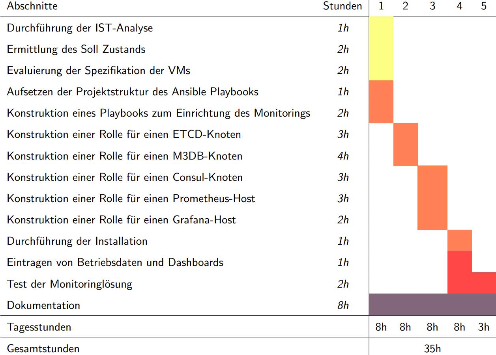

Einrichtung einer verteilten Monitoringlösung auf Basis von
Prometheus und M3 im Bereich des behördlichen Gesundheitswesens
von Nico Kahlert
Agenda
Agenda
Vorstellung des Unternehmens
Vorstellung des Unternehmens

IT Campus
Infos
- IT-Dienstleister für den Mittelstand
- ca. 100 Mitarbeitende
Weitere Standorte
- Hannover
- Kassel
- Braunschweig
Rechenzentren
- Braunschweig
- Hannover
- Salzgitter
- Limburg (OVH)
Langjährige Geschäftsbeziehungen mit dem HZI
Vorstellung des Kunden
Vorstellung des Kunden
 Bundesministerium für Gesundheit
Bundesministerium für Gesundheit
- Jens Spahn
- CDU
- 15Mrd € Haushalt
- 700 Bedienstete
- Wegweisend für die Gesundheitsämter
Projekteinordnung
Projekteinordnung
SORMAS Projekt
- Pandemiemanagementsoftware
- Kontaktverfolgung
- Entwickelt vom HZI/Vitagroup
- DevOps und Operations von NLI
- Hosting im ITZBund RZ
- 400 Instanzen
- Containerisiert
- Updates alle 2 Wochen
- Herausforderung für das Monitoring
Ablaufplan & Aufwand
Ablaufplan & Aufwand

IST/SOLL-Analyse
IST/SOLL-Analyse
- 1 vServer
- 4vCPU, 16GB RAM, 500GB SSD
- Prometheus & Grafana
- circa 400 Endpunkte
- Scraping: 468 MB/min
- 3 vServer
- 4 vCPU, 8 GB RAM, 500GB SSD
- Prometheus, M3DB, Consul & Grafana
Cluster Topologie
Node Topologie
Nutzen
- No Single Point of Failure
- Horizontal Skalierbar
- Wachsende Community
- Aggregation inklusive
Konstruktion von Playbook & Rollen
Konstruktion von Playbook & Rollen
---
- name: Setup Distributed Prometheus
hosts: all
become: yes
remote_user: root
roles:
- cloudalchemy.node_exporter
- common
- consul
- etcd
- m3db
- prometheus
- grafana
Prometheuskonfiguration
# prometheus.yml.j2
global:
scrape_interval: 15s
evaluation_interval: 15s
remote_write:
- url: "http://localhost:7201/api/v1/prom/remote/write"
scrape_configs:
- job_name: 'consul_services'
consul_sd_configs:
- server: "127.0.0.1:8500"
datacenter: "{{ consul_datacenter }}"
scheme: http
refresh_interval: "60s"
Installation
Installation
Fazit
Fazit
Monitoring
- Ausfalltoleranz
- Reproduzierbar
- Dynamisch
Planung
- Verschiebung in den Rollen
- In sich stimmig
- Viel gelernt!
Quellen
https://www.bundesgesundheitsministerium.de/
https://www.sormas-oegd.de/
https://www.itzbund.de/
https://etcd.io/
https://m3db.io
https://etcd.io/docs/v3.4/op-guide/configuration/
https://www.youtube.com/watch?v=CcH13GyszHI
https://www.itzbund.de/DE/home/home_node.html
https://www.youtube.com/watch?v=gqwcUgZOoyI
https://prometheus.io/docs/
https://docs.ansible.com/ansible/latest/user_guide/
https://www.ansible.com/resources/whitepapers
https://grafana.com/docs
https://podman.io/